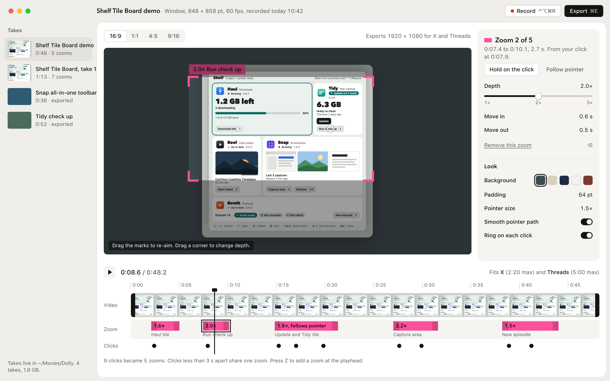
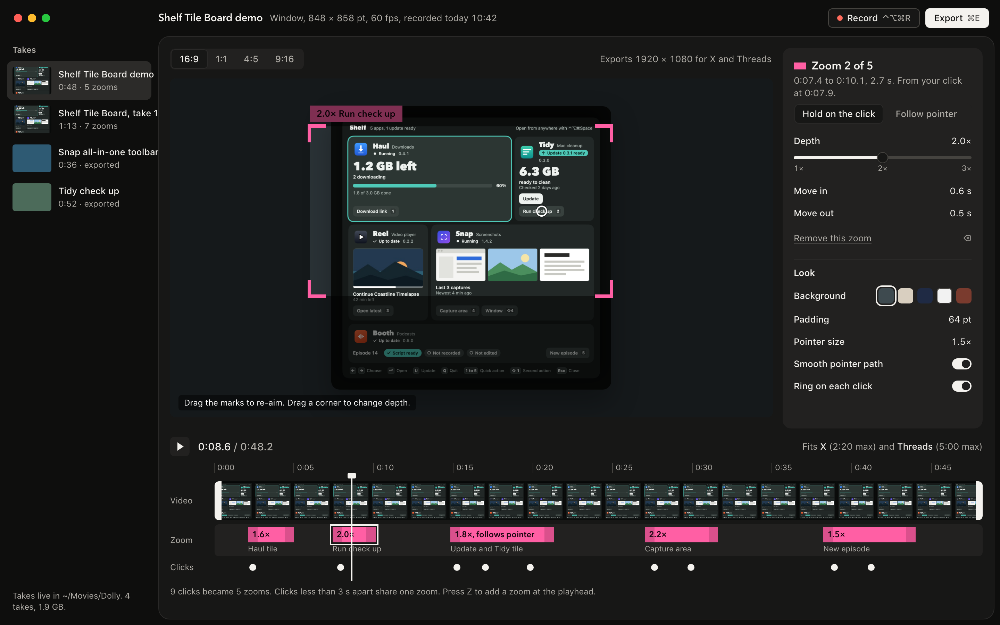
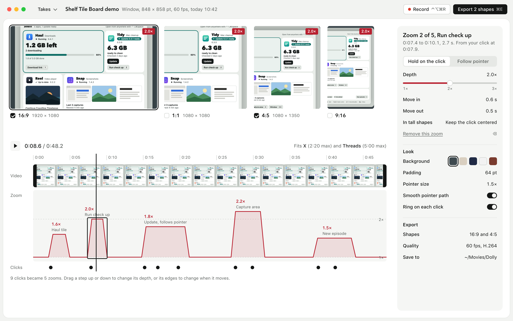
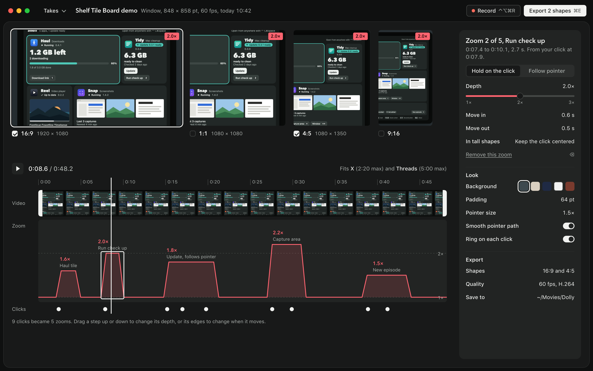
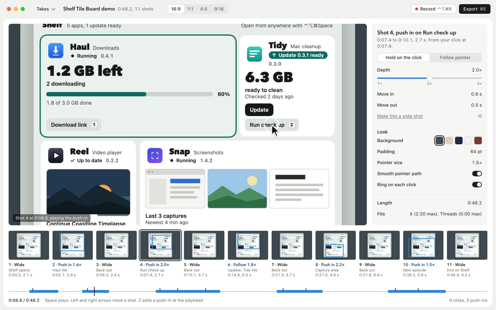
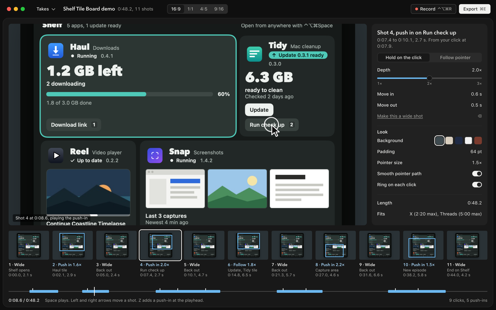

Same take in all three: a 48 second recording of Shelf's Tile Board, playhead at 0:08.6 inside zoom 2 (2.0× on Run check up). Light and dark side by side.
Zooms are strips of spike tape on the timeline and L-shaped spike corners on the stage. Selecting a zoom shows the whole recording with the four corners around where the camera lands: drag the corners to re-aim or change depth.


The same moment in all four export shapes at once, on one baseline. Zoom depth is a profile over time you drag up and down. Strongest at "record once, export every shape"; weakest at aiming a zoom, since no plate is big.


The edit reads as a shot list: wide shots and push-ins as equal panels, each camera move drawn over the wide frame in blue pencil. Clearest overview; equal panels hide how long each shot is, so timing lives in the thin scrub bar.

